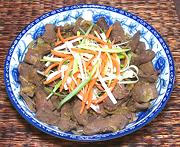

|
Pork Liver SautéThailand - Central - Pad Tap Moo | ||||
| Serves: Effort: Sched: DoAhead: |
2 main *** 45 min Some |
This Thai take on Liver & Onions is one of my favorite ways to cook liver. It's quick and easy too, but should be served immediately when done. This can be a main course or a side dish for twice as many servings. | |||
|
1 6 6 1 1/4 1/2 1 --- 2 2 |
# oz cl T c T T --- oz oz |
Pork Liver (1) Onion Garlic Green Peppercorns (2) Fish Sauce (3) Sugar Oil --Garnish Carrot slivered Scallion slivered |
Prep - (30 min)
|